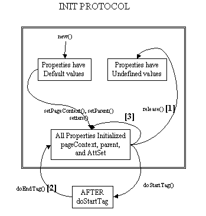

Interface Tag
- All Superinterfaces:
JspTag
- All Known Subinterfaces:
BodyTag, IterationTag
- All Known Implementing Classes:
BodyTagSupport, TagAdapter, TagSupport
Properties
The Tag interface specifies the setter and getter methods for the core pageContext and parent properties.
The JSP page implementation object invokes setPageContext and setParent, in that order, before invoking doStartTag() or doEndTag().
Methods
There are two main actions: doStartTag and doEndTag. Once all appropriate properties have been initialized, the doStartTag and doEndTag methods can be invoked on the tag handler. Between these invocations, the tag handler is assumed to hold a state that must be preserved. After the doEndTag invocation, the tag handler is available for further invocations (and it is expected to have retained its properties).
Lifecycle
Lifecycle details are described by the transition diagram below, with the following comments:
- [1] This transition is intended to be for releasing long-term data. no guarantees are assumed on whether any properties have been retained or not.
- [2] This transition happens if and only if the tag ends normally without raising an exception
- [3] Some setters may be called again before a tag handler is reused. For instance,
setParent()is called if it's reused within the same page but at a different level,setPageContext()is called if it's used in another page, and attribute setters are called if the values differ or are expressed as request-time attribute values. - Check the TryCatchFinally interface for additional details related to exception handling and resource management.

Once all invocations on the tag handler are completed, the release method is invoked on it. Once a release method is invoked all properties, including parent and pageContext, are assumed to have been reset to an unspecified value. The page compiler guarantees that release() will be invoked on the Tag handler before the handler is released to the GC.
Empty and Non-Empty Action
If the TagLibraryDescriptor file indicates that the action must always have an empty action, by an <body-content> entry of "empty", then the doStartTag() method must return SKIP_BODY.
Otherwise, the doStartTag() method may return SKIP_BODY or EVAL_BODY_INCLUDE.
If SKIP_BODY is returned the body, if present, is not evaluated.
If EVAL_BODY_INCLUDE is returned, the body is evaluated and "passed through" to the current out.
-
Field Summary
FieldsModifier and TypeFieldDescriptionstatic final intEvaluate body into existing out stream.static final intContinue evaluating the page.static final intSkip body evaluation.static final intSkip the rest of the page. -
Method Summary
Modifier and TypeMethodDescriptionintdoEndTag()Process the end tag for this instance.intProcess the start tag for this instance.Get the parent (closest enclosing tag handler) for this tag handler.voidrelease()Called on a Tag handler to release state.voidSet the current page context.voidSet the parent (closest enclosing tag handler) of this tag handler.
-
Field Details
-
SKIP_BODY
static final int SKIP_BODYSkip body evaluation. Valid return value for doStartTag and doAfterBody.- See Also:
-
EVAL_BODY_INCLUDE
static final int EVAL_BODY_INCLUDEEvaluate body into existing out stream. Valid return value for doStartTag.- See Also:
-
SKIP_PAGE
static final int SKIP_PAGESkip the rest of the page. Valid return value for doEndTag.- See Also:
-
EVAL_PAGE
static final int EVAL_PAGEContinue evaluating the page. Valid return value for doEndTag().- See Also:
-
-
Method Details
-
setPageContext
Set the current page context. This method is invoked by the JSP page implementation object prior to doStartTag().This value is *not* reset by doEndTag() and must be explicitly reset by a page implementation if it changes between calls to doStartTag().
- Parameters:
pc- The page context for this tag handler.
-
setParent
Set the parent (closest enclosing tag handler) of this tag handler. Invoked by the JSP page implementation object prior to doStartTag().This value is *not* reset by doEndTag() and must be explicitly reset by a page implementation.
- Parameters:
t- The parent tag, or null.
-
getParent
Tag getParent()Get the parent (closest enclosing tag handler) for this tag handler.The getParent() method can be used to navigate the nested tag handler structure at runtime for cooperation among custom actions; for example, the findAncestorWithClass() method in TagSupport provides a convenient way of doing this.
The current version of the specification only provides one formal way of indicating the observable type of a tag handler: its tag handler implementation class, described in the tag-class sub-element of the tag element. This is extended in an informal manner by allowing the tag library author to indicate in the description sub-element an observable type. The type should be a sub-type of the tag handler implementation class or void. This additional constraint can be exploited by a specialized container that knows about that specific tag library, as in the case of the JSP standard tag library.
- Returns:
- the current parent, or null if none.
- See Also:
-
doStartTag
Process the start tag for this instance. This method is invoked by the JSP page implementation object.The doStartTag method assumes that the properties pageContext and parent have been set. It also assumes that any properties exposed as attributes have been set too. When this method is invoked, the body has not yet been evaluated.
This method returns Tag.EVAL_BODY_INCLUDE or BodyTag.EVAL_BODY_BUFFERED to indicate that the body of the action should be evaluated or SKIP_BODY to indicate otherwise.
When a Tag returns EVAL_BODY_INCLUDE the result of evaluating the body (if any) is included into the current "out" JspWriter as it happens and then doEndTag() is invoked.
BodyTag.EVAL_BODY_BUFFERED is only valid if the tag handler implements BodyTag.
The JSP container will resynchronize the values of any AT_BEGIN and NESTED variables (defined by the associated TagExtraInfo or TLD) after the invocation of doStartTag(), except for a tag handler implementing BodyTag whose doStartTag() method returns BodyTag.EVAL_BODY_BUFFERED.
- Returns:
- EVAL_BODY_INCLUDE if the tag wants to process body, SKIP_BODY if it does not want to process it.
- Throws:
JspException- if an error occurred while processing this tag- See Also:
-
doEndTag
Process the end tag for this instance. This method is invoked by the JSP page implementation object on all Tag handlers.This method will be called after returning from doStartTag. The body of the action may or may not have been evaluated, depending on the return value of doStartTag.
If this method returns EVAL_PAGE, the rest of the page continues to be evaluated. If this method returns SKIP_PAGE, the rest of the page is not evaluated, the request is completed, and the doEndTag() methods of enclosing tags are not invoked. If this request was forwarded or included from another page (or Servlet), only the current page evaluation is stopped.
The JSP container will resynchronize the values of any AT_BEGIN and AT_END variables (defined by the associated TagExtraInfo or TLD) after the invocation of doEndTag().
- Returns:
- indication of whether to continue evaluating the JSP page.
- Throws:
JspException- if an error occurred while processing this tag
-
release
void release()Called on a Tag handler to release state. The page compiler guarantees that JSP page implementation objects will invoke this method on all tag handlers, but there may be multiple invocations on doStartTag and doEndTag in between.
-